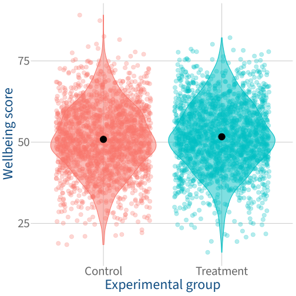

Code
p_sig_violin <- sig_data |>
ggplot(aes(x = group, y = score, fill = group, colour = group)) +
geom_violin(alpha = 0.5) +
geom_jitter(alpha = 0.3, size = 3) +
stat_summary(fun = mean, geom = 'point', colour = 'black', size = 5) +
theme(legend.position = 'none') +
labs(
y = 'Wellbeing score',
x = 'Experimental group'
)
p_sig_violin